描画（描く）
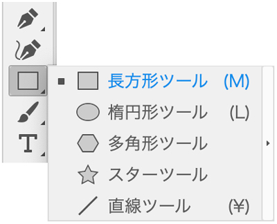
- 長方形・楕円形・多角形はツールを利用して描きます
- それ以外の自由な曲線は、基本的に「ペンツール」で描きます
- いわゆる「鉛筆」などのメタファーではなく、力学の理論構造で線が描画されます
ツールパネルを分離
- ツールを長押しして「▶」をクリックすると分離します
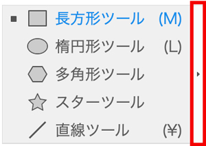
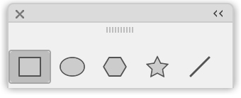
長方形を描画
- 長方形（矩形）：rectangle
ドラッグをして描く
- プレス&ドラッグ（自由な長方形の描画）
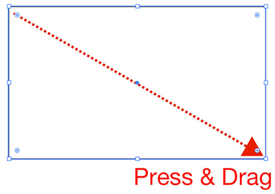
正方形を描く
- 「Shift」キーを押しながら、Press & Drag
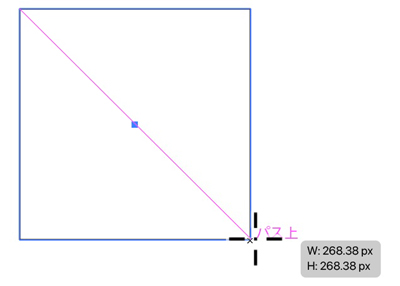
中心から長方形を描く
- 「Alt」キーを押しながら、Press & Drag
クリックして描く
- 画面をクリックすると「ダイアログボックス」が表示され、数値を入力する（指定した大きさで描画）
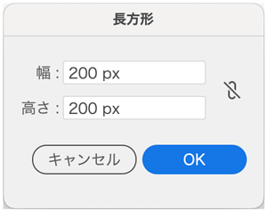
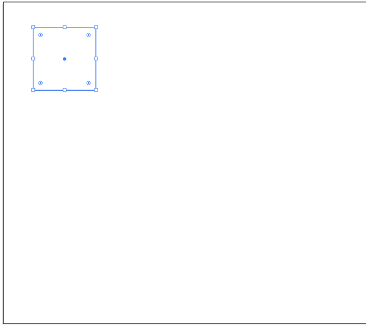
1. 選択したオブジェクトを数値で移動する
- 選択ツール（黒い矢印）をダブルクリックしてダイアログボックスを表示
- 数値は必要に応じてダイアログボックス内で四則演算の指定をする
- 「コピー」ボタンを押す
幅200pxのオブジェクトを50px離してコピーを作成
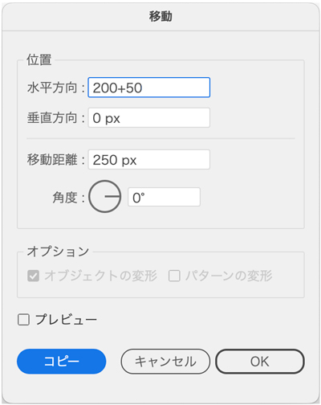
コピーを繰り返す
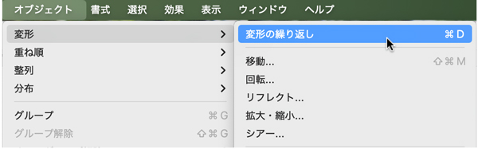
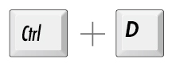
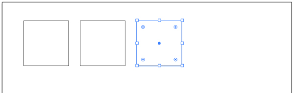
「選択ツール」でドラッグして選択
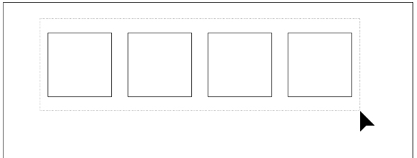
縦に移動コピー
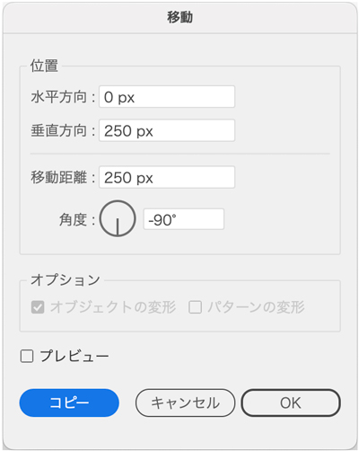
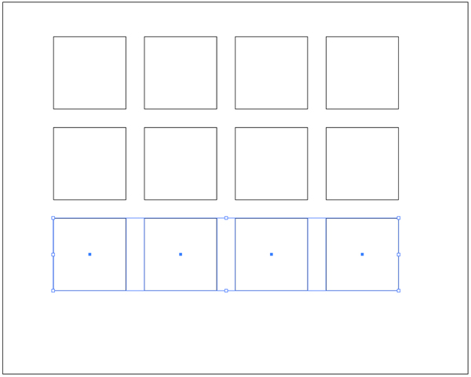
2. 長方形をAltキーで移動コピー
- 「選択ツール」で「Altキー」を押しながら移動
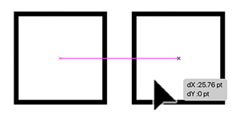
移動コピーを繰り返す
- 通常は、ショートカットキー「Ctrl ＋ D」を使う
- 「duplicate」：複製
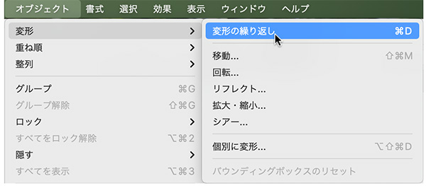
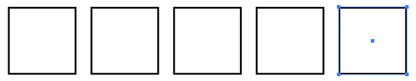